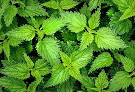

Кропива́ дводо́мна (Urtica dioica L.) — вид рослин роду кропива. Місцеві назви — «жалива велика», «жалюча кропива», «джиґу́ха»[1], діал. проке́ва або проки́ва[2]. Латинська назва кропиви — уртіка (Urtica); походить назва від слова «урере» (лат. urere) — «палити», «горіти»[3]. Кропива пече мурашиною кислотою, яка впорскується під шкіру, як шприцом, її пляшкоподібними клітинами-волосками. Їхній кінчик при дотику до тіла обламується, гострі краї встромлюються в шкіру, і з клітини-пляшечки виливається пекуча кислота.[3] На острові Ява і в Індонезії існують види кропиви, опік яких так само небезпечний, як укус змії.[3]
Багаторічна трав'яниста рослина, дводомна, з прямостійним нерозгалуженим стеблом 50-200 см заввишки. Листки супротивні, черешкові, яйцеподібно-ланцетні, по краю великозубчасті. Вся рослина вкрита короткими простими та довгими жалкими волосками. Квітки одностатеві, дуже дрібні, з простим чотирироздільним квітколожем, жовтувато-зелені, зібрані пучками в колосоподібні суцвіття, тичинкові — прямостійні, маточкові — звисаючі. Плід — яйцеподібний горішок. Цвіте з червня по вересень, плоди дозрівають в червні-вересні [4].Запаси сировини кропиви великі. Перспективними для заготівлі сировини є Івано-Франківська, Чернівецька, Тернопільська, Львівська, Волинська, Рівненська, Житомирська, Київська, Чернігівська, Сумська, Черкаська, Вінницька та Хмельницька області. Потреби в лімітуванні обсягів заготівлі сировини кропиви дводомної немає. Не допускається збір сировини (особливо листя) кропиви на узбіччях доріг та забруднених промисловими викидами територіях. Заготовку листків кропиви можна проводити скрізь, де вона поширена, але не поблизу доріг з інтенсивним рухом автотранспорту. Збір сировини проводять вручну. Для цього одягають шкіряні рукавиці, обхоплюють пальцями стебло чи гілочку кропиви, і протягують рукою таким чином по всій довжині стебла чи гілочки (обдираючи стебло).

Для лікарських потреб використовують листя (Folia Urticae dioicae), яке заготовляють весною і на початку літа, корені (Radix Urticae dioicae) та насіння (Semen Urticae dioicae) [2]. Багаторічна трав'яниста рослина родини кропивних (Urticaceae) (50–120 см заввишки) з повзучим, дерев'янистим, гіллястим кореневищем. Стебло пряме, чотиригранне, вкрите, як і вся рослина, довгими і короткими жалкими волосками. Листки видовжено-яйцеподібні (8–17 см завдовжки, шириною 2–8 см), до верхівки поступово звужені, при основі серцеподібні, крупнопилчасто зубчасті, на стеблі супротивно розміщені, довгочерешкові, з прилистками. Квітки одностатеві, дрібні, зелені, правильні, зібрані в довгі розгалужені колосисті суцвіття, які виходять із пазух листків. Рослина дводомна. Чоловічі суцвіття — прямостоячі, жіночі — після цвітіння пониклі. Тичинкові квітки з чотирироздільною оцвітиною і чотирма тичинками. Маточкові — з чотирилистою оцвітиною, внутрішні два листочки оцвітини крупніші за зовнішні. Маточка одна, з майже сидячою приймочкою і верхньою зав'яззю. Плід широкоовальна або яйцеподібна сім'янка жовтувато-сірого кольору.
Кропива дводомна відростає ранньою весною і вже через 15—20 днів після зникнення снігу утворює великі листки, які в цей час вирізняються високим вмістом вітамінів. Росте доволі швидко, до початку червня вже розпочинається цвітіння. Кропива зберігає зелене листя і після плодоносіння. Цвіте з червня по вересень, плодоносить з липня.
вгору